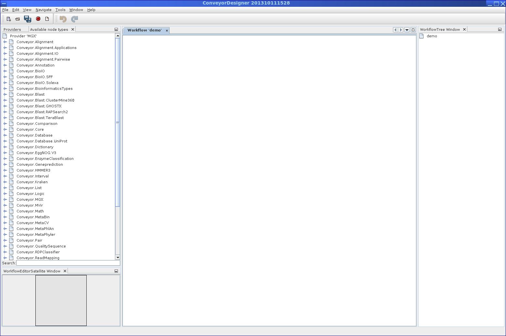

Next: Getting started Up: MGX User Guide Previous: Search Contents
All offered analysis tools provided by the MGX platform are implemented as workflows for the Conveyor [Linke et al., 2011] workflow engine developed by B. Linke. Within Conveyor, tools are provided as so-called ”nodes”, which resemble individual processing steps and which are used to implement novel analysis methods by simply arranging and connecting them into a larger workflow. Conveyor currently includes plugins providing typical bioinformatics tools like BLAST or HMMer, but has recently been extended with dedicated plugins aimed at metagenome analysis, like MetaCV, MetaPhyler or MetaPhlAn, which all perform taxonomic analysis. A dedicated Conveyor plugin provides access to MGX data structures, thereby enabling the analysis of metagenomes stored in the MGX system with processing tools provided by Conveyor itself. While workflow definitions are stored in a XML-based format, a graphical user interface, the Conveyor Designer (3.1), enables users to implement new analysis by simply placing and connecting nodes.
|  |
As Conveyor is actively developed and new tools are continously integrated, giving a thorough introduction to Conveyor is beyond the scope of this document. The most up-to-date documentation describing Conveyor itself and the Conveyor Designer in particular can be found at the Conveyor web site http://www.uni-giessen.de/fbz/fb08/Inst/bioinformatik/software/Conveyor.